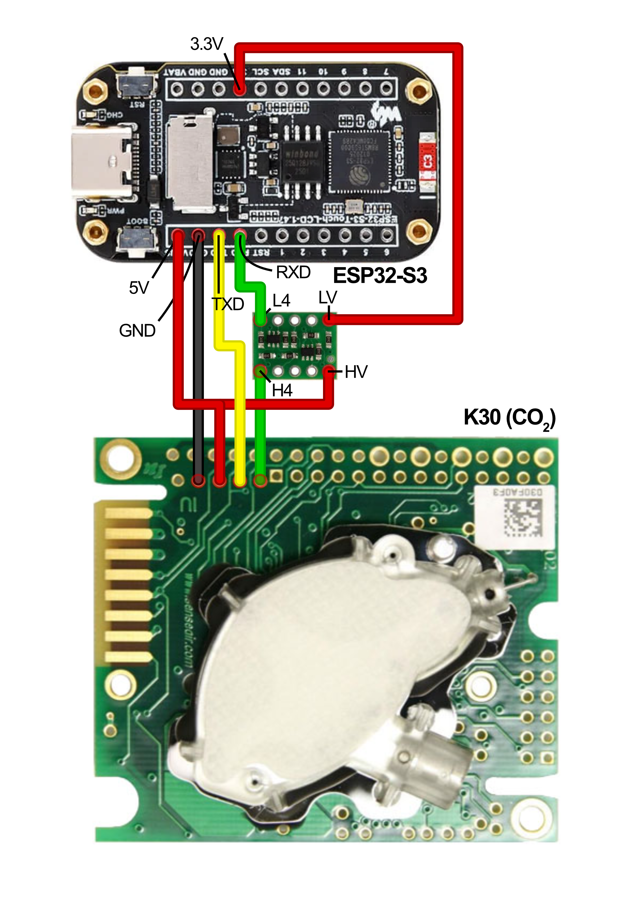

Schematics¶
Wiring schematics for both sensor variants.
| File | Variant |
|---|---|
co2_schematic.png |
CO₂-only sensor |
co2_o2_schematic.png |
CO₂ + O₂ sensor |
CO₂-only — Full Connection Reference¶

Power¶
| From | To | Notes |
|---|---|---|
| USB-C 5V (VBUS) | ESP32 5V pin | Main supply |
| USB-C GND | ESP32 GND | Common ground |
| USB-C VBUS | Level shifter HV | 5V reference for K30 side |
| ESP32 3.3V | Level shifter LV | 3.3V reference for ESP32 side |
Display (SPI — built into Waveshare dev kit)¶
| ESP32 GPIO | Function |
|---|---|
| 39 | SPI MOSI |
| 38 | SPI SCLK |
| 21 | Display CS |
| 45 | Display DC |
| 40 | Display RST |
| 46 | Backlight (PWM) |
These connections are internal to the Waveshare board and require no external wiring.
Touchscreen (I²C — built into Waveshare dev kit)¶
| ESP32 GPIO | AXS5106L pin | Notes |
|---|---|---|
| 42 | SDA | Internal to board |
| 41 | SCL | Internal to board |
| 47 | RST | Internal to board |
| 48 | INT | Internal to board |
These connections are internal to the Waveshare board and require no external wiring.
SD Card (SDMMC 4-bit — built into Waveshare dev kit)¶
| ESP32 GPIO | SD pin |
|---|---|
| 16 | CLK |
| 15 | CMD |
| 17 | D0 |
| 18 | D1 |
| 13 | D2 |
| 14 | D3 |
These connections are internal to the Waveshare board and require no external wiring.
K30 CO₂ Sensor (UART via level shifter)¶
| ESP32 GPIO | Level shifter | K30 pin | Notes |
|---|---|---|---|
| 43 (TX) | — | RXD | ESP32 TX → K30 RX |
| 44 (RX) | HV3 → LV3 | TXD | K30 TX → ESP32 RX |
| 3.3V | LV ref | — | Level shifter reference |
| VBUS (5V) | HV ref | — | Level shifter reference |
| GND | — | GND | Common ground |
| VBUS (5V) | — | G+ (VCC) | K30 power — must be 5V |
Note: Do not use the K30's RST pin as the HV reference for the level shifter. Connect HV directly to the VBUS rail.
CO₂ + O₂ — Additional Connections¶

All connections above apply, plus:
SEN0322 O₂ Sensor (I²C, shared bus)¶
| SEN0322 pin | Connection | Notes |
|---|---|---|
| VCC | 3V3 (3.3V) | 3.3V not 5V |
| GND | GND | Common ground |
| SDA | ESP32 GPIO42 | Shared with touch controller |
| SCL | ESP32 GPIO41 | Shared with touch controller |
| Dial switch | Position 3 | Sets I²C address to 0x73 |
Schematic Notes¶
- All GND connections share a common ground rail.
- The Waveshare ESP32-S3 dev kit has an onboard 3.3V regulator. Do not exceed 600 mA total from VBUS.
- The level shifter RST pin (if present on your variant) is not used — leave it unconnected or tie to LV.
- GPIO pins 1–10 are all available for the solenoid or future expansion. GPIO1 is used in the firmware by default but any free GPIO can be substituted with a one-line firmware change.